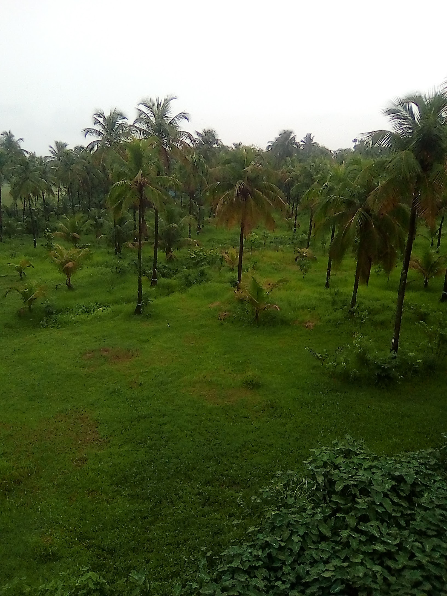

Data Management Aid

Empowering institutions through systematic data management, strategic planning, and operational excellence.
We systematically evaluate and restructure institutional architectures to maximize workforce alignment, policy coherence, and overall organizational performance.
Integrating advanced, smart data tracking tools and comprehensive Monitoring & Evaluation frameworks designed to generate actionable institutional insights.
Fostering accountability and skill transformation through standard operating procedures (SOPs), specialized mentoring, and impact-driven culture building.
Strengthening institutional and human resource capacity.
Conducting diagnostic studies and performance reviews.
Supporting evidence-based policy formulation.
Building leadership and management competencies.
Our achievements over the years

Data Management Aid (DMA) provides comprehensive Organizational and Institution Development services to strengthen the capacity, governance, and long-term sustainability of organizations. Our approach focuses on strategic planning, organizational assessment, institutional capacity building, leadership development, and change management to help organizations achieve their development goals effectively.
We work closely with government agencies, development partners, NGOs, and private organizations to design practical solutions that improve organizational performance, accountability, and service delivery. Our experienced consultants ensure that every intervention is tailored to the unique needs and priorities of our clients.

Beyond organizational development, DMA provides technical assistance in research, monitoring and evaluation, mobile data collection, data management, statistical analysis, and capacity development across multiple development sectors.
Our multidisciplinary team has extensive experience in conducting baseline studies, endline evaluations, impact assessments, qualitative research, GIS mapping, and evidence-based reporting. Using modern digital data collection platforms and internationally recognized analytical tools, we ensure reliable, accurate, and high-quality results for every project.
An evidence-based analysis exploring the relationship between workplace conditions, worker wellbeing and productivity across selected garment factories in Bangladesh.
Dhaka & Gazipur
2025 – 2026
Mixed Methods
ILO
This research study examines how occupational safety, wage structure, working hours and worker participation influence productivity within the Ready-Made Garments sector. The findings provide actionable insights for policymakers, factory management and development practitioners.
The study employed a mixed-method approach combining quantitative surveys of 1,200 workers with qualitative interviews of factory managers, trade union representatives and policymakers.
Factories with better safety standards showed 12–15% higher productivity.
Participation committees significantly reduced absenteeism and improved communication.
Female-friendly workplace policies improved retention rates and worker satisfaction.
If you are interested in learning more about this sector, please click the link below to view the complete profile document.
Over the last three decades, DMA has supported government agencies, international NGOs, UN organizations and donor-funded programs through research, evaluation, organizational development and capacity building initiatives across Bangladesh.